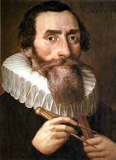
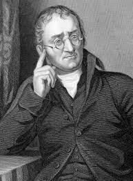
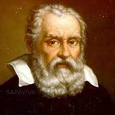

Knowledge About Scientist
The roles of "scientists", and their predecessors before the emergence of modern scientific disciplines, have evolved considerably over time. Scientists of different eras (and before them, natural philosophers, mathematicians, natural
historians, natural theologians, engineers, and others who contributed to the development of science) have had widely different places in society, and the social norms, ethical values, and epistemic virtues associated with scientists—and
expected of them—have changed over time as well. Accordingly, many different historical figures can be identified as early scientists, depending on which characteristics of modern science are taken to be essential.
Some historians point to the Scientific Revolution that began in 16th century as the period when science in a recognizably modern form developed. It wasn't until the 19th century that sufficient socioeconomic changes had occurred for scientists
to emerge as a major profession.

Albert Einstein ( German: (About this soundlisten); 14 March 1879 – 18 April 1955) was a German-born theoretical physicist, widely acknowledged to be one of the greatest physicists of all time. Einstein is best known for
developing the theory of relativity, but he also made important contributions to the development of the theory of quantum mechanics. Relativity and quantum mechanics are together the two pillars of modern physics. His mass–energy equivalence
formula E = mc2, which arises from relativity theory, has been dubbed "the world's most famous equation". His work is also known for its influence on the philosophy of science. He received the 1921 Nobel Prize in Physics "for his services
to theoretical physics, and especially for his discovery of the law of the photoelectric effect", a pivotal step in the development of quantum theory. His intellectual achievements and originality resulted in "Einstein" becoming synonymous
with "genius". Read more

Johannes Kepler was born on 27 December, 1571, in the Free Imperial City of Weil der Stadt (now part of the Stuttgart Region in the German state of Baden-Württemberg, 30 km west of Stuttgart's center). His grandfather, Sebald
Kepler, had been Lord Mayor of the city. By the time Johannes was born, he had two brothers and one sister and the Kepler family fortune was in decline. His father, Heinrich Kepler, earned a precarious living as a mercenary, and he
left the family when Johannes was five years old. He was believed to have died in the Eighty Years' War in the Netherlands. His mother, Katharina Guldenmann, an innkeeper's daughter, was a healer and herbalist. Born prematurely, Johannes
claimed to have been weak and sickly as a child. Nevertheless, he often impressed travelers at his grandfather's inn with his phenomenal mathematical faculty. He was introduced to astronomy at an early age and developed a strong passion
for it that would span his entire life. At age six, he observed the Great Comet of 1577, writing that he "was taken by mother to a high place to look at it." In 1580, at age nine, he observed another astronomical event, a lunar eclipse,
recording that he remembered being "called outdoors" to see it and that the moon "appeared quite red".Read more

John Dalton (6 September 1766 – 27 July 1844) was an English chemist, physicist and meteorologist. He is best known for introducing the atomic theory into chemistry, and for his research into colour blindness, sometimes referred
to as Daltonism in his honour. When he was 15, Dalton joined his older brother Jonathan in running a Quaker school in Kendal, Westmorland, about 45 miles (72 km) from his home. Around the age of 23, Dalton may have considered studying
law or medicine, but his relatives did not encourage him, perhaps because being a Dissenter, he was barred from attending English universities. He acquired much scientific knowledge from informal instruction by John Gough, a blind
philosopher who was gifted in the sciences and arts. At 27, he was appointed teacher of mathematics and natural philosophy at the "Manchester Academy" in Manchester, a dissenting academy (the lineal predecessor, following a number
of changes of location, of Harris Manchester College, Oxford). He remained for seven years when the college's worsening financial situation led to his resignation. Dalton began a new career as a private tutor in the same two subjects.
Read more

Isaac Newton was born (according to the Julian calendar, in use in England at the time) on Christmas Day, 25 December 1642 (NS 4 January 1643) "an hour or two after midnight", at Woolsthorpe Manor in Woolsthorpe-by-Colsterworth,
a hamlet in the county of Lincolnshire. His father, also named Isaac Newton, had died three months before. Born prematurely, Newton was a small child; his mother Hannah Ayscough reportedly said that he could have fit inside a quart
mug. When Newton was three, his mother remarried and went to live with her new husband, the Reverend Barnabas Smith, leaving her son in the care of his maternal grandmother, Margery Ayscough (née Blythe). Newton disliked his stepfather
and maintained some enmity towards his mother for marrying him, as revealed by this entry in a list of sins committed up to the age of 19: "Threatening my father and mother Smith to burn them and the house over them." Newton's mother
had three children (Mary, Benjamin and Hannah) from her second marriage. Read more

Galileo Galilei was born in Pisa (then part of the Duchy of Florence), Italy, on 15 February 1564, the first of six children of Vincenzo Galilei, a lutenist, composer, and music theorist, and Giulia Ammannati, who had married
in 1562. Galileo became an accomplished lutenist himself and would have learned early from his father a scepticism for established authority. Three of Galileo's five siblings survived infancy. The youngest, Michelangelo (or Michelagnolo),
also became a lutenist and composer who contributed to Galileo's financial burdens for the rest of his life. Michelangelo was unable to contribute his fair share of their father's promised dowries to their brothers-in-law, who would
later attempt to seek legal remedies for payments due. Michelangelo would also occasionally have to borrow funds from Galileo to support his musical endeavours and excursions. These financial burdens may have contributed to Galileo's
early desire to develop inventions that would bring him additional income. Read more